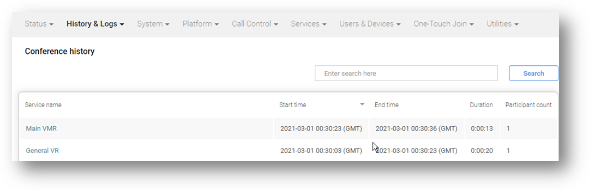

Suggested completion time: 20 minutes
Use section #4.2 and #5 of the lab sheet.
To create a VR:
NOTE: In the next session you will add an alias to capture a VoIP provider assigned telephone number.
Add a numeric alias to a second (or more service):
Before you test, ensure you have waited 1 minute for the configuration changes to synchronise across all the nodes. Dial into the VR, then enter the Conference Code (either as DTMF tones if connecting from a video endpoint, or via the WebApp prompt if connecting via WebRTC) for the digits you configured as the numeric alias added to the other service. You should be transferred into the second service.
The user and admin experiences are different depending on whether you are using WebRTC or a video endpoint. You should try both.
When you have created a VR and added a numeric alias to a VMR, and are then able to successfully transfer a participant from the VR to VMR, grab a screenshot of the conference history for a video endpoint and the administrator log entry that shows the participant has been transferred, for example:
For a video endpoint ONLY, a screenshot of the Conference History showing the connection to a VR, then into the VMR:
NOTE: you will NOT see a conference history record for a VR service when using WebRTC, as this is merely an HTTP request. If you don’t have access to a video endpoint, ask your trainer to create a call into the VR, then transfer to the VMR.

For a video endpoint ONLY, the administrator log entry showing the participant is transferred from the VR to VMR:
NOTE: for completeness, we have shown all the administrator log entries associated with the call and transfer, with the actual transfer event highlighted.
2021-03-01T00:30:03.926+00:00 edge 2021-03-01 00:30:03,926 Level="INFO" Name="administrator.conference" Message="Participant attempting to join conference." ConferenceAlias="sip:lobby@vc20-osl.pexip.net;transport=tcp" Participant="sip:user0041@192.168.199.118" Protocol="SIP" Direction="in" Remote-address="81.100.54.99" Participant-id="e5e6285b-ea31-4c49-aadf-abf5e98c367b" Registered="False" Location="DMZ"
2021-03-01T00:30:03.972+00:00 conf01 2021-03-01 00:30:03,972 Level="INFO" Name="administrator.conference" Message="Conference has been created." Conference="General VR" Service-tag="" Service-type="two_stage_dialing" Conference-ID="3deb24d1-ca56-451b-801c-a5cfb4706fc3"
2021-03-01T00:30:04.815+00:00 conf01 2021-03-01 00:30:04,815 Level="INFO" Name="administrator.conference" Message="Participant has joined." Conference="General VR" Service-tag="" Service-type="two_stage_dialing" ConferenceAlias="sip:lobby@vc20-osl.pexip.net;transport=tcp" Participant="sip:user0041@192.168.199.118" DisplayName="Chris RPD" Protocol="SIP" Direction="in" Vendor="Polycom RealPresence Desktop for Windows (3.10.4.72927)" Call-id="e0cfb169-5f417646-963dd6ff@192.168.199.118" Conversation-id="45807c58-246e-4128-a402-07b8ba1a7a32" Participant-id="e5e6285b-ea31-4c49-aadf-abf5e98c367b" Remote-address="81.100.54.99" Location="LAN" Licenses="1" Signaling-node="91.90.42.120" Signaling-location="DMZ" Media-node="10.247.180.201" Conference-ID="3deb24d1-ca56-451b-801c-a5cfb4706fc3" Proxy-node="91.90.42.120" Proxy-location="DMZ"
2021-03-01T00:30:20.740+00:00 conf01 2021-03-01 00:30:20,740 Level="INFO" Name="administrator.conference" Message="Participant transferred" Alias="12345" Conference="Main VMR" Service-tag="" Participant="sip:user0041@192.168.199.118" Call-id="e0cfb169-5f417646-963dd6ff@192.168.199.118"
2021-03-01T00:30:23.381+00:00 edge 2021-03-01 00:30:23,380 Level="INFO" Name="administrator.conference" Message="Participant attempting to join conference." ConferenceAlias="12345" Participant="sip:user0041@192.168.199.118" Protocol="SIP" Direction="in" Remote-address="81.100.54.99" Participant-id="b5fabf84-5055-42d2-8a37-9da9b672784e" Registered="False" Location="DMZ"
2021-03-01T00:30:23.419+00:00 conf02 2021-03-01 00:30:23,419 Level="INFO" Name="administrator.conference" Message="Conference has been created." Conference="Main VMR" Service-tag="" Service-type="conference" Conference-ID="88d59689-de62-4c04-b7de-8985e85b0de0"
2021-03-01T00:30:23.658+00:00 conf01 2021-03-01 00:30:23,658 Level="INFO" Name="administrator.conference" Message="Participant has disconnected." Conference="General VR" Service-tag="" Service-type="two_stage_dialing" ConferenceAlias="sip:lobby@vc20-osl.pexip.net;transport=tcp" Participant="sip:user0041@192.168.199.118" DisplayName="Chris RPD" Protocol="SIP" Direction="in" Vendor="Polycom RealPresence Desktop for Windows (3.10.4.72927)" Call-id="e0cfb169-5f417646-963dd6ff@192.168.199.118" Conversation-id="45807c58-246e-4128-a402-07b8ba1a7a32" Participant-id="e5e6285b-ea31-4c49-aadf-abf5e98c367b" Remote-address="81.100.54.99" Location="LAN" Licenses="1" License-type="port" Signaling-node="91.90.42.120" Signaling-location="DMZ" Media-node="10.247.180.201" Conference-ID="3deb24d1-ca56-451b-801c-a5cfb4706fc3" Proxy-node="91.90.42.120" Proxy-location="DMZ" Duration="18.844" Detail="None"
2021-03-01T00:30:23.718+00:00 conf02 2021-03-01 00:30:23,718 Level="INFO" Name="administrator.conference" Message="Participant has joined." Conference="Main VMR" Service-tag="" Service-type="conference" ConferenceAlias="sip:lobby@vc20-osl.pexip.net;transport=tcp" Participant="sip:user0041@192.168.199.118" DisplayName="Chris RPD" Protocol="SIP" Direction="in" Vendor="Polycom RealPresence Desktop for Windows (3.10.4.72927)" Call-id="e0cfb169-5f417646-963dd6ff@192.168.199.118" Conversation-id="45807c58-246e-4128-a402-07b8ba1a7a32" Participant-id="b5fabf84-5055-42d2-8a37-9da9b672784e" Remote-address="81.100.54.99" Location="LAN" Licenses="1" Signaling-node="91.90.42.120" Signaling-location="DMZ" Media-node="10.247.180.202" Conference-ID="88d59689-de62-4c04-b7de-8985e85b0de0" Proxy-node="91.90.42.120" Proxy-location="DMZ"
2021-03-01T00:30:23.823+00:00 conf01 2021-03-01 00:30:23,823 Level="INFO" Name="administrator.conference" Message="Conference has been stopped." Conference="General VR" Service-tag="" Service-type="two_stage_dialing" Duration="19.852" Conference-ID="3deb24d1-ca56-451b-801c-a5cfb4706fc3"
2021-03-01T00:30:36.153+00:00 conf02 2021-03-01 00:30:36,153 Level="INFO" Name="administrator.conference" Message="Participant has disconnected." Conference="Main VMR" Service-tag="" Service-type="conference" ConferenceAlias="sip:lobby@vc20-osl.pexip.net;transport=tcp" Participant="sip:user0041@192.168.199.118" DisplayName="Chris RPD" Protocol="SIP" Direction="in" Vendor="Polycom RealPresence Desktop for Windows (3.10.4.72927)" Call-id="e0cfb169-5f417646-963dd6ff@192.168.199.118" Conversation-id="45807c58-246e-4128-a402-07b8ba1a7a32" Participant-id="b5fabf84-5055-42d2-8a37-9da9b672784e" Remote-address="81.100.54.99" Location="LAN" Licenses="1" License-type="port" Signaling-node="91.90.42.120" Signaling-location="DMZ" Media-node="10.247.180.202" Conference-ID="88d59689-de62-4c04-b7de-8985e85b0de0" Proxy-node="91.90.42.120" Proxy-location="DMZ" Duration="12.435" Detail="Remote disconnect"
2021-03-01T00:30:36.290+00:00 conf02 2021-03-01 00:30:36,290 Level="INFO" Name="administrator.conference" Message="Conference has been stopped." Conference="Main VMR" Service-tag="" Service-type="conference" Duration="12.871" Conference-ID="88d59689-de62-4c04-b7de-8985e85b0de0"